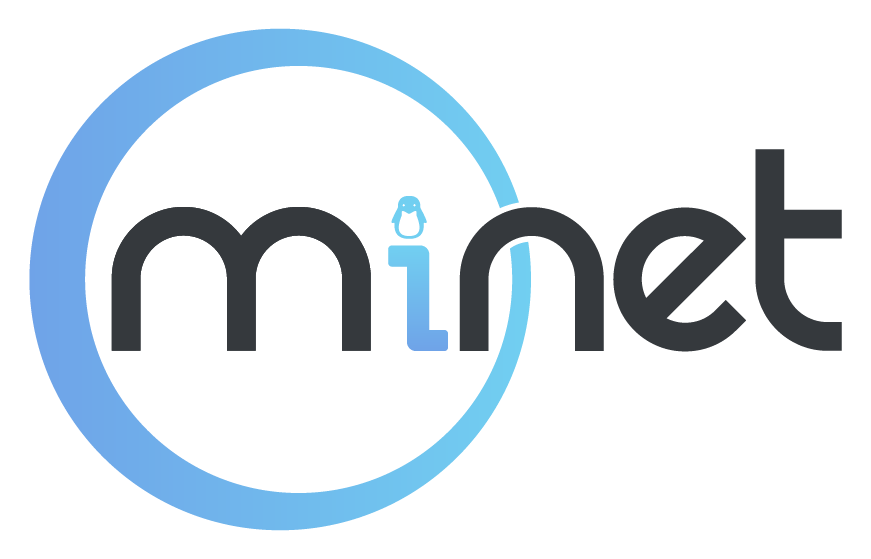
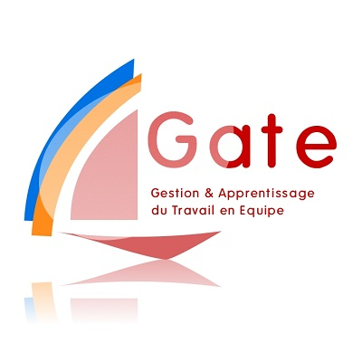

Ce stage à Telehouse constitue ma première expérience dans le monde de l'entreprise. Cependant, cela ne constitue pas ma seule expérience dans les projets de groupe ou les projets professionnalisants.
Il est ainsi pertinent de comparer ce que j'ai pu observer pendant mon stage à mes expériences passées, à savoir mes projets dans la vie associative du campus, et les différents projets du cursus de Télécom SudParis (projet Gate et développement informatique).
La vie associative
J'ai pu constater que la vie associative peut être très facilement transposée à la vie en entreprise.
Tout d'abord, au niveau de la structure d'équipe, qui nécessite un organigramme.
Les associations, tout comme les entreprises, ont besoin d'une organisation claire où chaque membre connaît son rôle et ses responsabilités. Cette structure permet une coordination efficace et une communication fluide entre les différents niveaux hiérarchiques.
Également, en ce qui concerne les prises d'initiatives pour gérer des projets, la vie associative offre une excellente expérience. Dans une association, les membres doivent souvent faire preuve de créativité et de proactivité pour mener à bien des projets avec des ressources souvent limitées.
Cette capacité à prendre des initiatives et à travailler de manière autonome est très prisée dans le monde de l'entreprise, où l'innovation et l'efficacité sont essentielles pour la réussite des projets.
La gestion de projet dans une association implique aussi des compétences en planification, en gestion des ressources humaines et en résolution de problèmes, qui sont directement applicables en entreprise.
Par exemple, la planification d'un événement associatif requiert une coordination minutieuse des tâches, une gestion budgétaire rigoureuse et une capacité à anticiper et résoudre les imprévus.
En outre, la vie associative encourage le développement de compétences interpersonnelles, telles que le travail en équipe, la négociation et la gestion des conflits.
Travailler avec des individus de divers horizons dans un cadre associatif permet de comprendre et d'apprécier différentes perspectives, ce qui est extrêmement bénéfique dans le contexte professionnel où la collaboration et l'inclusion sont cruciales.

L'association à laquelle je participe et qui se rapproche le plus du monde de l'entreprise est l'association MiNET. Ceci parce que nous avons une obligation de service. En effet, MiNET est un Fournisseur d'Accès Internet associatif, pour la Maisel. Mais contrairement au monde de l'entreprise, les relations y sont beaucoup plus amicales, ce qui est à la fois plus agréable, mais cela implique moins de professionnalisme.
Grâce à mon expérience à Telehouse, je me suis également rendue compte que MiNET était une association très dynamique. La raison en est que les membres sont tous volontaires et donc motivés. Les projets menés sont des initiatives personnelles exclusivement, chacun y consacre plus de temps, en travaillant parfois jusqu'à tard dans la nuit, là ou l'entreprise impose des horaires cadrés. C'est grâce à cette comparaison que j'ai compris l'intérêt pour Telehouse de mettre en place des objectifs personnels pour ses employés.
Une autre comparaison intéressante entre l'entreprise et l'associatif est la solidarité. En associatif, les enjeux sont moindres. Ainsi, lorsqu'un litige est en cours, les rapports d'incidents n'ont pour vocation que de comprendre ce qu'il s'est passé afin de pouvoir agir plus efficacement les prochaines fois.
En entreprise, des sommes importantes sont souvent en jeu. Ainsi, les rapports d'incident ont aussi pour but de comprendre qui est à l'origine du litige entre les différentes parties prenantes du projet, et qui doit en payer les frais. Il ne faut à mon avis pas considérer que c'est un mécanisme malsain, car c'est avant tout un mécanisme nécéssaire, car tout cohabitation entre différents services, voire entreprise, nécéssite un déroulement très structuré pour éviter les déséquilibres.
Les projets de 1A : développement informatique et projet Gate.

Il est intéressant de comparer les projets effectués en première année avec le monde de l'entreprise, du point de vue du management.
Pour le projet Gate, le déroulement des opérations est similaire à ce que j'ai pu observer en entreprise, cependant, les enjeux sont moindres. Ceci ajouté au fait que nous sommes entre étudiants, il est compliqué de trouver un équilibre pour faire respecter l'organigramme. Le résultat étant que le chef de projet se retrouve souvent avec la responsabilité sans avoir de pouvoir de directives. Il était donc beaucoup plus compliqué de s'imposer en tant que chef de projet, là où un manager est protégé par son titre et son expérience.
Pour le projet de développement informatique, la tâche était plus compliquée. En effet, un organigramme n'étant pas demandé, personne n'a osé en faire un. Cela m'a fait prendre conscience de l'importance d'une structure. Les répartitions des tâches étaient inégales et souvent, nous avancions en manque de directives.
Concernant l'importance d'un organigramme, j'ai remarqué deux choses : la première, je viens de l'expliquer, on a besoin d'un organigramme pour structurer l'équipe et savoir qui donne les directives. Mon stage à Telehouse m'en a montré une autre : lors de la dernière semaine, le STC a acceuilli un nouveau technicien. Mon manager nous a invité à bénéficier de la pédagogie inversée et nous a encouragé à former ce technicien sur les tâches basiques que nous maitrisions (visite du site, circuits à cabler et tests). Je me suis sentie très gênée de faire cela. La raison est la suivante : je suis une stagiaire. Je ne me sens pas du tout légitime de former qui que ce soit, même sur des tâches que je maîtrise. Si un organigramme m'avait octroyé un "titre plus haut", j'aurai pu le faire sans gêne. L'organigramme permet ainsi de donner de la légitimité, et c'est à la fois une force et une faiblesse car on peut se sentir bloqué par son statut.
Par ailleurs, pour le développement informatique, nous choisissions notre groupe de travail, contrairement au projet Gate et à l'entreprise. En conséquence, les moments passés avec les camarades de travail étaient certes plus agréables, mais il était plus compliqué de s'exprimer lorsqu'une situation litigieuse était en cours.
Ce que j'ai particulièrement apprécié à Telehouse, c'est que l'équipe est jeune et dynamique, et les relations en sont plus informelles. Le sociogramme est donc très différent de l'organigramme, toutes les personnes du STC savent faire de toutes les expériences des moments agréables, tout en restant professionnels. Les blagues et plaisanteries ne sont pas en reste, ce qui rend le travail en équipe plus équilibré.